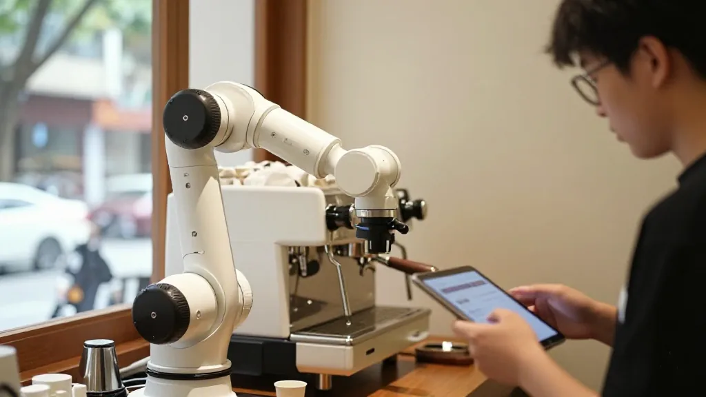
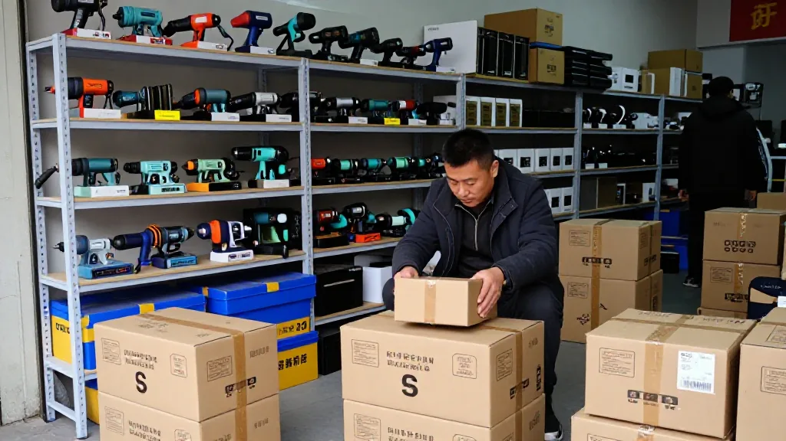
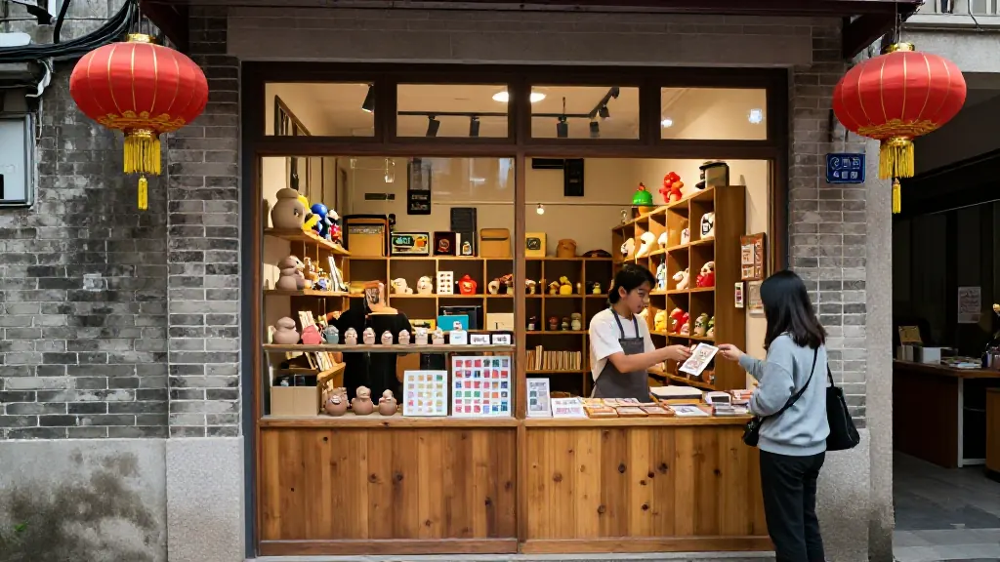

圖片由 AI輔助創作（Z-Image-Turbo）Image by AI (Z-Image-Turbo)
【鄭哥點評】欄目：鄭哥博客點評｜日期：2026-10-23
今日五條廣州、深圳嘅創業資訊，從咖啡產業、跨境電商、AI選品，到青年實體店同跨境服務，全部係同一件事——有人已經跑通咗，條路喺度。
一、廣州咖啡產業掀AI浪潮 門店破8000家，「咖十條」最高補貼500萬

圖片由 AI輔助創作（Z-Image-Turbo）Image by AI (Z-Image-Turbo)
截至2025年底廣州咖啡門店超8000家，居全國第二、華南第一，全產業鏈年產值670億、帶動就業超15萬人；今年5至8月咖啡文化季期間全市新增門店超500家。新出《推動咖啡產業高質量發展若干措施》：生豆進口通關優化、數字化交易平台、技改單項最高獎3000萬、金融端推「咖啡貸」，對在穗開亞洲首店、中國首店品牌企業單項最高補助500萬元。智能裝備成新賣點：具身智能六軸機械臂加AI店長系統，一人可管10台設備，門店人力成本佔比從30%—50%壓到8%以下。
來源：https://gd.chinadaily.com.cn/a/202610/19/WS6ad5764ce4b09a165c78fe7b.html
二、深圳跨境電商進入「2.0時代」：華南城大賣家退潮，小賣家仍年銷3、4千萬

圖片由 AI輔助創作（Z-Image-Turbo）Image by AI (Z-Image-Turbo)
從華強北背包客到龍崗千億產業，2021年亞馬遜封號潮重創深圳跨境電商，600個品牌、3000多家店鋪被封，行業損失超千億；曾出「坂田五虎」「華南城四少」的龍崗華南城交易廣場如今轉冷清。但業內人指小賣家仍能穩紮穩打年銷3、4千萬：38歲的周恆2012年靠速賣通無貨源鋪貨起步，如今在華南城做小型電動工具，單店年銷3、4千萬，新推產品兩個月從0做到30萬。他坦言做跨境「七分產品、二分運營、一分運氣」，鋪貨模式已無競爭力，做品牌才是趨勢。
來源：https://www.ygx2.com/7/274.html
三、「00後」三次創業失敗靠AI翻盤：深圳嚴景森年營收550萬
圖片由 AI輔助創作（Z-Image-Turbo）Image by AI (Z-Image-Turbo)
深圳龍崗出生的嚴景森（2001年）讀高中時就泡華強北倒騰二手手機賺差價，用母親給的7000元起步，曾三次創業失敗。2025年1月起他把智能配件、小家電等廣貨賣向俄羅斯，用自研AI選品工具把人工每天篩50—100個商品提升到精篩500個，效率近10倍，鋪店單月流水穩在45萬—50萬；自動化選品加ERP系統自2025年10月上線已累積8000家註冊用戶，每月帶來超20萬營收。去年5月獲200萬港元天使輪投資，公司去年總營收近550萬，月均超60萬，還靠學校補貼、街道對接撐過最難日子。他說：「深圳最不缺的就是試錯機會。」
來源：https://www.163.com/dy/article/L14UKBLL05129QAF.html
四、廣州荔灣「青春小店」：9家青年小店開啟西關集章遊

圖片由 AI輔助創作（Z-Image-Turbo）Image by AI (Z-Image-Turbo)
團市委聯合王老吉等主辦的荔灣「青春小店打卡地圖集章」火熱進行中，覆蓋「1+5」商圈9家青春小店，含鐵道模型、爬寵科普、社區咖啡、手作治愈、粵語話劇等業態，集齊9枚印章可兌文創禮及冰雪體驗門票。背後是廣州「青春小店」三級模式：集合店、獨立店、快閃店，入駐者享免租優惠加導師陪跑。香港青年主理人葉建輝的廣府IP玩偶連續兩年入選廣州必買城市禮物。中小實體創業者可留意這類免租加流量位扶持通道。
來源：https://bang.ifeng.com/c/8xHIQN8wbQj
五、新西蘭人安德烈：從「深圳快遞包」到把公司開在深圳
圖片由 AI輔助創作（Z-Image-Turbo）Image by AI (Z-Image-Turbo)
32歲的新西蘭人Andre Schellenberg 11歲就用母親帳號在網上拆解舊電腦賣零部件，發現所有包裹都印著「深圳」；19歲第一次來華強北，2025年底在深圳註冊公司做電商、國際貿易與供應商採購，幫海外企業對接中國供應商。他今年成立「NZGBA新西蘭粵港澳大灣區網絡」，面向新西蘭進口商、網店賣家、中小企和青年創業者搭橋：「深圳的零部件、工程、製造、物流和人才，把創意變成現實。」
來源：https://www.10100.com/article/154913165
鄭哥點評
圖片由 AI輔助創作（Z-Image-Turbo）Image by AI (Z-Image-Turbo)
呢五條睇落散，講嘅其實係同一條線：平台嘅紅利散晒，落地能力同產品本身先係硬實力。
第一，咖啡呢條最值得睇嘅唔係8000家門店，係人力成本由30%—50%壓到8%。 一人管10台設備加AI店長，唔係花招，係重新分配咗成本結構。茶葉、陳皮呢類產品一樣——揀貨、揀茶、揀年份呢啲靠人眼同經驗嘅環節，AI同機器人可以承接好多。做茶廠、做陳皮倉，最終都係要行呢條路：唔係裁人，係用工具令同樣嘅人做多啲。
第二，跨境「2.0」係真嘅轉折。 亞馬遜封號潮之後死咗600個品牌、3000多家店鋪，但細水長流嘅賣家照樣年銷3、4千萬。關鍵分別就喺周恆嗰句「七分產品、二分運營、一分運氣」——鋪貨冇壁壘，做品牌先有。而深圳嗰個00後嚴景森，7000蚊起步、三次失敗，最後靠自研AI選品工具將效率做到近10倍，再加ERP吸住8000個用戶月賺20萬。工具係後手，但佢係用工具放大了自己嘅判斷力——呢個同「用AI改命」嘅人，最大分別。
第三，「青春小店」呢條最接地氣，係我哋生意人最應該睇嘅一條。 免租、導師陪跑、流量位，青年創業最缺嘅三樣嘢政府都補咗。中小實體戶值得留意呢類扶持通道，起步期唔好硬食租金，搵政策窗口先至慳。
第四，NZGBA安德烈個故事，睇到香港人嘅角色。 佢11歲拆舊電腦賣零部件，19歲第一次嚟華強北，最後喺深圳開公司做跨境採購——呢條路我哋行咗26年。新西蘭嘅進口商、網店賣家、中小企，需要嘅正正係一個識深圳供應鏈嘅人。我哋做嘅嘢，本質上就係呢種「落地服務」。
一句到尾：廣州深圳每日都有新店開、新品牌起，但真正賺到錢嗰啲，冇一個係靠運氣，係靠產品同工具磨出嚟嘅門檻。深圳最不缺試錯機會，缺嘅係試錯之後留下嚟嘅本事。
圖片由 AI輔助創作（Z-Image-Turbo）Image by AI (Z-Image-Turbo)
[Zheng Ge's Take] Column: Zheng Ge's blog commentary | Date: 2026-10-23
Five items of startup news from Guangzhou and Shenzhen today — coffee, cross-border e-commerce, AI product sourcing, youth-run shops and cross-border services. They are all the same thing: somebody has already made the road work, and the road is there.
1. AI surges through Guangzhou's coffee industry: more than 8,000 stores, and a 'Coffee Ten' subsidy of up to RMB 5 million
圖片由 AI輔助創作（Z-Image-Turbo）Image by AI (Z-Image-Turbo)
By the end of 2025 Guangzhou had over 8,000 coffee stores — second in the country and first in South China — with an annual output value of RMB 67 billion across the whole industry chain and more than 150,000 jobs; during the coffee culture season from May to August this year the city added over 500 stores. The new 'Several Measures to Promote the High-Quality Development of the Coffee Industry' cover faster customs clearance for green beans, a digital trading platform, up to RMB 30 million per project for technical upgrading and a 'coffee loan' on the finance side, plus a subsidy of up to RMB 5 million for a brand opening an Asia-first or China-first store in Guangzhou. Intelligent equipment is the new selling point: an embodied-intelligence six-axis robot arm plus an AI store-manager system lets one person run ten machines, pushing labour from 30–50% of store cost down to under 8%.
Source: https://gd.chinadaily.com.cn/a/202610/19/WS6ad5764ce4b09a165c78fe7b.html
2. Shenzhen cross-border e-commerce enters 'version 2.0': the big sellers of Huanancheng are receding, small sellers still turn over RMB 30–40 million a year
圖片由 AI輔助創作（Z-Image-Turbo）Image by AI (Z-Image-Turbo)
From backpackers in Huaqiangbei to a hundred-billion industry in Longgang: the 2021 Amazon account ban hit Shenzhen cross-border e-commerce hard — 600 brands and more than 3,000 stores were shut, with industry losses above RMB 100 billion; the Huanancheng trade plaza in Longgang, which once produced the 'Five Tigers of Bantian' and the 'Four Young Masters of Huanancheng', has gone quiet. Yet people in the trade say a small seller can still grind out RMB 30–40 million a year: Zhou Heng, 38, started in 2012 dropshipping on AliExpress with no stock of his own, and now sells small power tools in Huanancheng, turning over RMB 30–40 million a year in a single store and taking a new product from zero to RMB 300,000 in two months. Cross-border, he says plainly, is 'seven parts product, two parts operations, one part luck'; the dropshipping model has no competitive edge left, and building a brand is where things are going.
Source: https://www.ygx2.com/7/274.html
3. Three failed startups, then AI turns the game around: Yan Jingsen of Shenzhen, RMB 5.5 million a year
圖片由 AI輔助創作（Z-Image-Turbo）Image by AI (Z-Image-Turbo)
Born in Longgang, Shenzhen in 2001, Yan Jingsen was already in Huaqiangbei in high school, buying and reselling second-hand phones for the margin. He started with RMB 7,000 from his mother and failed three times. From January 2025 he began selling Guangdong goods — smart accessories, small appliances — into Russia, using a self-built AI sourcing tool to lift screening from 50–100 products a day by hand to 500 products screened properly, close to ten times the throughput; a single storefront holds a steady monthly turnover of RMB 450,000–500,000, and the automated sourcing plus ERP system, live since October 2025, has accumulated 8,000 registered users and brings in over RMB 200,000 a month. In May last year he raised a HK$2 million angel round; the company turned over close to RMB 5.5 million last year, over RMB 600,000 a month on average, and got through the hardest days on a school subsidy and a street-office introduction. 'The one thing Shenzhen never runs short of,' he says, 'is chances to try and fail.'
Source: https://www.163.com/dy/article/L14UKBLL05129QAF.html
4. Liwan's 'youth shops' in Guangzhou: nine young-run stores open a Xiguan stamp trail
圖片由 AI輔助創作（Z-Image-Turbo）Image by AI (Z-Image-Turbo)
The Liwan 'youth shop stamp map', run by the municipal youth league with Wanglaoji and others, is in full swing, covering nine youth shops across the '1+5' commercial zones — railway models, reptile keeping, neighbourhood coffee, handmade crafts, Cantonese-language theatre and more. Collect all nine stamps and you can redeem a design gift and a ticket to an ice-and-snow experience. Behind it is Guangzhou's three-tier 'youth shop' model — collective store, independent store, pop-up — with rent waivers plus a mentor on the ground for those who move in. The Cantonese-culture IP plush toys of Hong Kong young entrepreneur Ip Kin-fai have been picked two years running for Guangzhou's 'must-buy city gift' list. For small and medium bricks-and-mortar founders, this kind of rent-free plus footfall support channel is worth watching.
Source: https://bang.ifeng.com/c/8xHIQN8wbQj
5. A New Zealander called Andre: from 'parcels from Shenzhen' to a company in Shenzhen
圖片由 AI輔助創作（Z-Image-Turbo）Image by AI (Z-Image-Turbo)
Andre Schellenberg, a 32-year-old New Zealander, was breaking up old computers and selling the parts online with his mother's account at the age of 11, and noticed every parcel was stamped 'Shenzhen'. At 19 he came to Huaqiangbei for the first time; at the end of 2025 he registered a company in Shenzhen doing e-commerce, international trade and supplier sourcing, helping overseas firms connect with Chinese suppliers. This year he set up the NZGBA, the New Zealand Guangdong–Hong Kong–Macao Greater Bay Area Network, to bridge importers, online sellers, small businesses and young entrepreneurs in New Zealand: 'Shenzhen's components, engineering, manufacturing, logistics and people turn ideas into reality.'
Source: https://www.10100.com/article/154913165
Zheng Ge's Take
圖片由 AI輔助創作（Z-Image-Turbo）Image by AI (Z-Image-Turbo)
These five look scattered, but they run on one line: the platform dividend has been scattered to the wind; what counts is the ability to land things and the product itself.
First, the number worth watching in the coffee item is not the 8,000 stores — it is labour going from 30–50% of cost to 8%. One person running ten machines plus an AI store manager is not a gimmick; it is the cost structure being re-cut. Tea, dried tangerine peel, the same: the picking, the sorting, the judging of vintage, the parts that lean on the human eye and experience — AI and robots can take over a great deal of it. A tea factory or a peel warehouse ends up on this road too: not cutting people, but using tools so that the same people do more.
Second, cross-border '2.0' is a real turning point. After the Amazon ban wave 600 brands and more than 3,000 stores died, yet the sellers who keep a steady flow still do RMB 30–40 million a year. The difference is exactly Zhou Heng's line — 'seven parts product, two parts operations, one part luck': dropshipping has no moat; a brand does. And that post-2000 founder in Shenzhen, Yan Jingsen, started with HK$7,000 and failed three times, then built his own AI sourcing tool to nearly ten times the throughput and added an ERP that holds 8,000 users and earns RMB 200,000 a month. The tool comes second, but he used the tool to amplify his own judgement — that is the biggest difference between him and the people who think AI will change their fate for them.
Third, the 'youth shop' item is the most down-to-earth, and of these five it is the one we businesspeople should read most closely. Rent-free space, a mentor alongside, a footfall slot — the three things young founders lack most, and the government has topped up all three. Small and medium operators should watch these support channels; do not force yourself to swallow rent at the start, find the policy window and save.
Fourth, the NZGBA and Andre's story shows the part Hong Kong people play. He was taking apart old computers and selling the parts at 11, came to Huaqiangbei for the first time at 19, and ended up running a cross-border sourcing company in Shenzhen — we have walked this road for 26 years. What importers, online sellers and small businesses in New Zealand need is precisely someone who knows the Shenzhen supply chain. What we do is, in essence, exactly this kind of 'landing service'.
One line to finish: new shops open and new brands rise in Guangzhou and Shenzhen every day, but the ones that actually make money are none of them leaning on luck — they grind a threshold out of product and tools. Shenzhen is never short of chances to try and fail; what is short is the skill that stays after the failing.